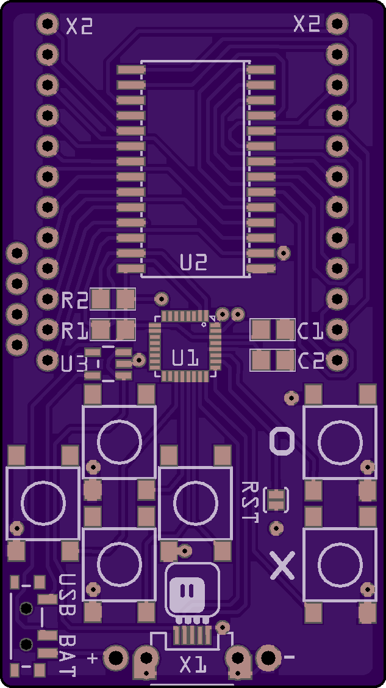

Making it Cheaper Again¶
Published on 2018-07-14 in PewPew FeatherWing.
The PewPew Lite FeatherWing is one of my favorite designs, and I think it’s really great for learning programming games — actually better than the µGame , because it’s so much simpler. The shield itself is pretty cheap, too. Unfortunately, you still need to have a Feather M0 (or, even better, M0 Express) to use it, and that’s actually twice as expensive as the shield itself. Add the LiPo battery to the mix, and you could instead buy an ODROID GO or something similar. This is problematic especially if you want to organize a workshop — you either make a workshop for the rich, or find a sponsor.
I have already tried to lower the price of the whole thing by putting the microcontroller directly on the device — basically copying the Trinket M0 schematic for that — but the resulting device was pretty complex to make, and I was never quite happy with it. Plus, you still needed the LiPo battery and its charging circuit and all that.
Today I sat down and redesigned the latest version of PewPew completely, using the knowledge I gained from µGame and from the CircuitPython Badge to simplify it as much as possible, while still keeping its basic functionality. That’s how I came up with PewPew 6.0:
It’s exactly the size of two AA batteries, because that’s what it is going to be using for power. It uses the good old HT16K33 chip, just like the PewPew Lite, which simplifies things a lot. However, the buttons are handled directly by the microcontroller now, because to have them handled by the HT16K33, I would need six extra resistors, and I tried to minimize the parts count. To get rid of Shottky diodes or transistors for isolating the USB VBUS, I simply used the power switch to switch between the battery power and the USB power. I might even skip the voltage regulator and make it always run on battery power. Apart from that, there are the six buttons, the bi-color matrix, the SAMD21 microcontroller itself, two pull-up resistors for the I2C bus and two filter capacitors — that’s it. Everything is routed on the top layer of the PCB (the bottom is one big ground plane), and all parts (except for the battery holder) are mounted on top, to simplify assembly. I’m using the QFN version of SAMD21, because it’s slightly cheaper.
I considered using other chips than the HT16K33 for driving the matrix, in particular, simple shift registers to do all the work in the microcontroller, but in the end the HT16K33 is cheap enough and does all the work for me. In the future, I might consider switching to charlieplexed SMD bi-color LEDs and driving them from the MCU pins directly — that would probably shave a few dollars from the BOM at the cost of more work with assembling it.